Tratores e seus constituintes (P3)
Instituto Federal do Paraná
Curso Superior em Engenharia Agronômica
2 de outubro de 2026
Constituintes do sistema de transmissão:
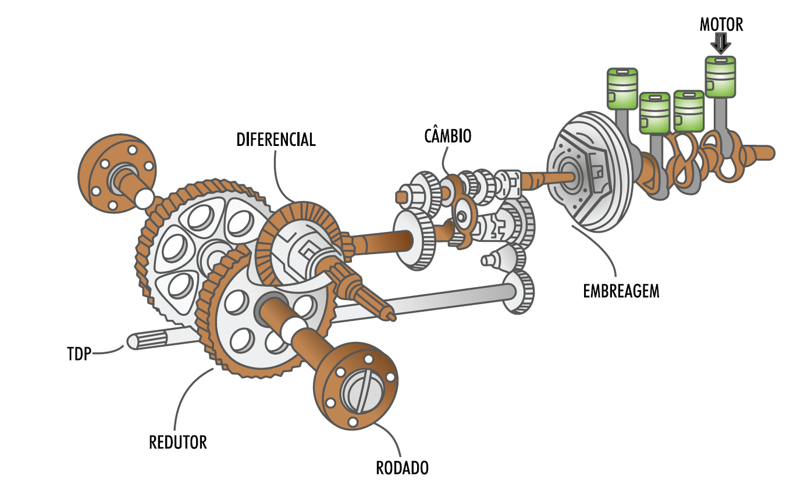
Sistema que promove controle e segurança durante a operação do veículo.
Serve para retardar e parar o trator. Garantindo que o operador mantenha o controle sobre a velocidade e a direção, essenciais para uma operação segura e eficiente.
Em tratores 4x2 e 4x2 TDA os freios são localizados exclusivamente nas rodas traseiras e são acionados por pedais (um par).
Pedais individuais que permitem o acionamento do freio de forma isolada para cada lado do trator.
Em tratores 4x4 o sistema de freio é nas 4 rodas ou um sistema central acionado por meio da transmissão. Nesses tratores há apenas um pedal de acionamento.
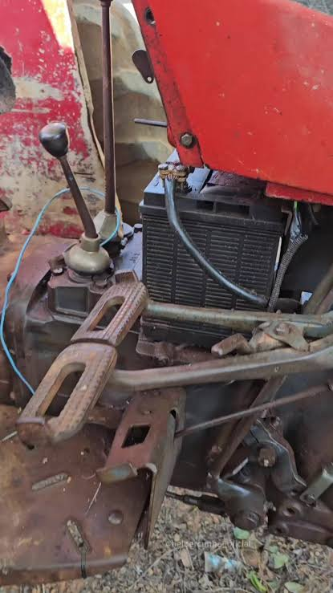
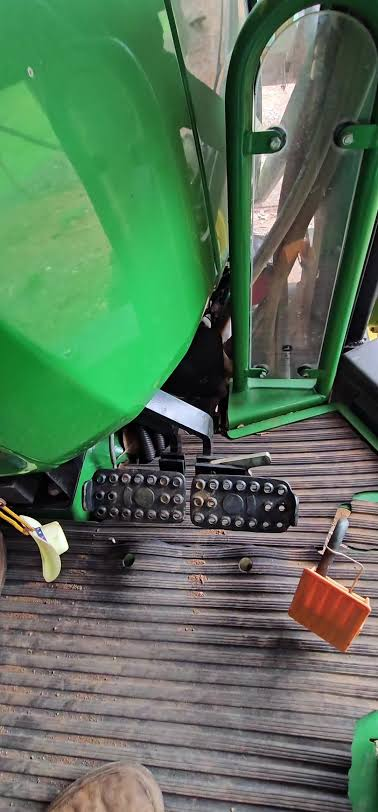
Freios individuais permitem a realização de manobras, operações em locais declivosos e auxílio no controle da patinagem das rodas.
Tipos de freios:
Freio a disco:
São muito utilizados em tratores e são constituídos por discos de freio montados nas rodas do trator e pastilhas de freio.
Funcionamento: Quando o freio é acionado, as pastilhas são pressionadas contra os discos e criam atrito.
Freios a disco são rápidos e possuem desempenho superior em condições de alta demanda.
Freio a tambor:
Possuem tambores de freio montados nas rodas e pastilhas.
Funcionamento: Quando o freio é acionado, as pastilhas de freio são acionadas e pressionam as superfícies internas do tambor, criando atrito.
Freios com necessidade de manutenção regular.
Freio a tambor:
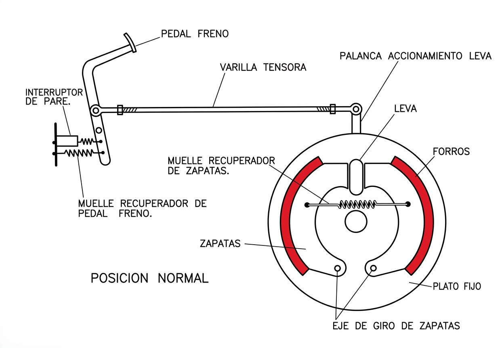
Freio a tambor:
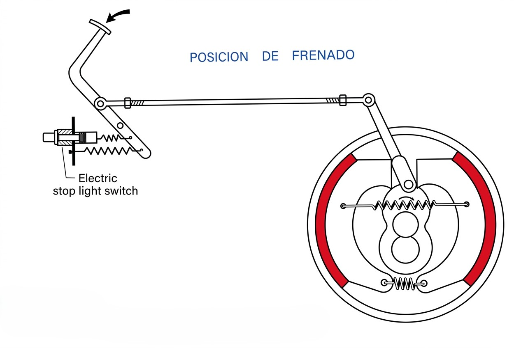
Freio hidráulico (acionamento):
Empregado em tratores de maior porte. Possuem um sistema hidráulico com pressão para acionar as pastilhas ou sapatas.
Funcionamento: Quando o freio é acionado, um cilindro mestre pressuriza o fluido hidráulico, que empurra os pistões dos cilindros de roda para dentro das pastilhas ou sapatas, freando o trator.
Freio hidráulico (acionamento):
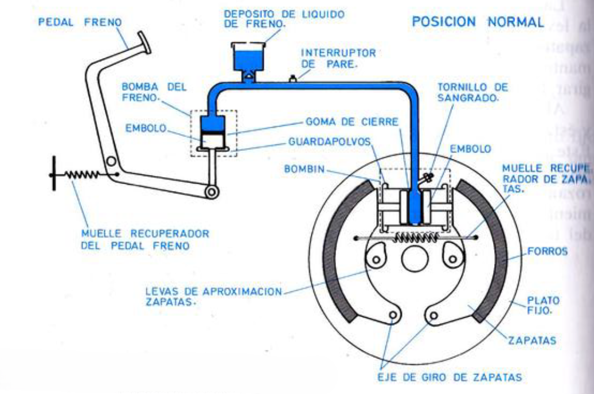
Freio hidráulico (acionamento):
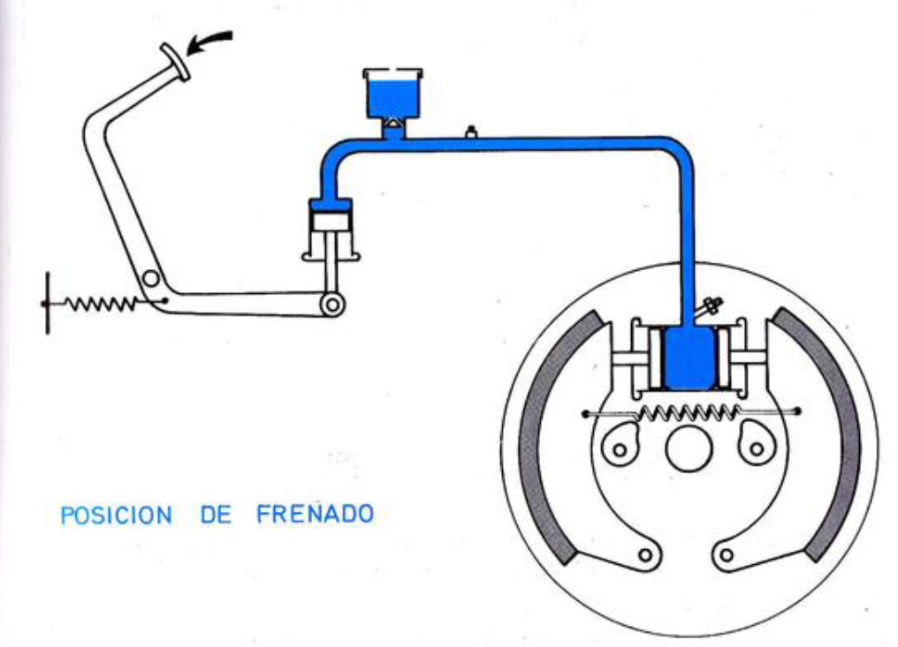
Freio pneumático (acionamento):
Nesse sistema, se utiliza ar comprimido para gerar a força de frenagem.
Funcionamento: Quando o freio é acionado, o ar comprimido é direcionado aos cilindros de freio nas rodas. A pressão do ar nos cilindros aciona as pastilhas ou sapatas de freio, que pressionam o disco ou tambor de freio, gerando atrito.
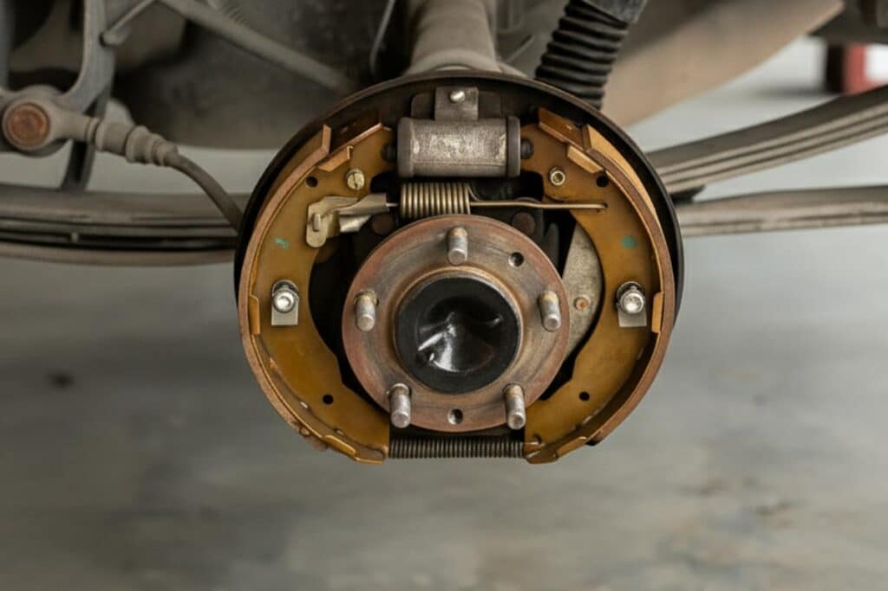
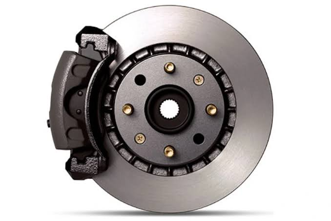
É o elemento de ligação entre o veículo (trator) e o solo ou qualquer superfície.
Desenvolvimento no começo do século XIX
Tipos de pneus:
Pneus industriais:
Utilizados em maquinários de indústrias, geralmente para funções de locomoção de cargas (empilhadeiras).
Podem ser maciços ou inflados.
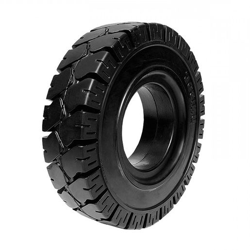
Pneus fora de estrada (OTR):
São produzidos para utilização em terrenos desnivelados, irregulares e de difícil trafegabilidade.
Empregado na mineração, construção civil e demais obras.
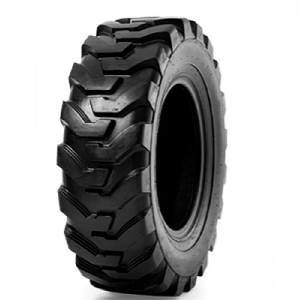
Pneus fora de estrada (OTR):
A resistência e capacidade de carga é informada pelo número de camadas construtivas ou PR (Ply Rating) ou capacidade de lonas
ex: Um pneu OTR pode ser encontrado com 68 PR com capacidade para 92500 kg e diâmetro de 3,7 m
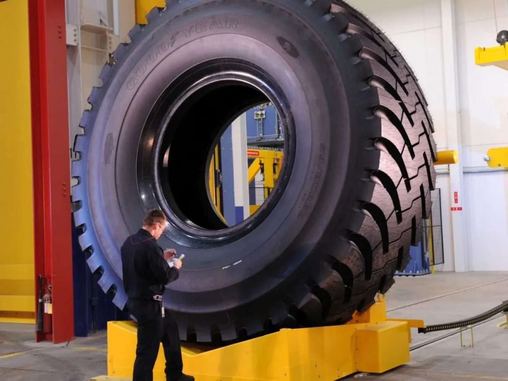
Pneus para tratores e implementos agrícolas:
São aqueles empregados em máquinas e implementos, e que são comumente utilizados em solos com baixa ou média capacidade de suporte (macios ou médios, preparados ou mobilizados, com ou sem palhada), e que com menor frequência são utilizados também em estradas para locomoção.
Pneus para tratores e implementos agrícolas:
Qual a importância do solo para as características e variações dos pneus agrícolas?
… aderência e suporte
Quem sabe de química, física, gênese e classificação e manejo do solo pode relacionar melhor.
Pneus para tratores e implementos agrícolas:
| Capacidade de suporte do solo e aderência: Menor | Capacidade de suporte do solo e aderência: Maior |
|---|---|
| Solos úmidos ou alagados | Solos secos |
| Solos preparados | Estradas, solos firmes e alguns no SPD |
| Solos em declives e aclives | Solos planos |
| Solos arenosos | Solos argilosos |
| Solos com alto volume de palha e matéria orgânica | Solo com baixo volume de palha e matéria orgânica |
Considerar condição normal de trafegabilidade. Pode haver exceções. SPD – Sistema Plantio Direto.
Funções dos pneus:
Constituição:
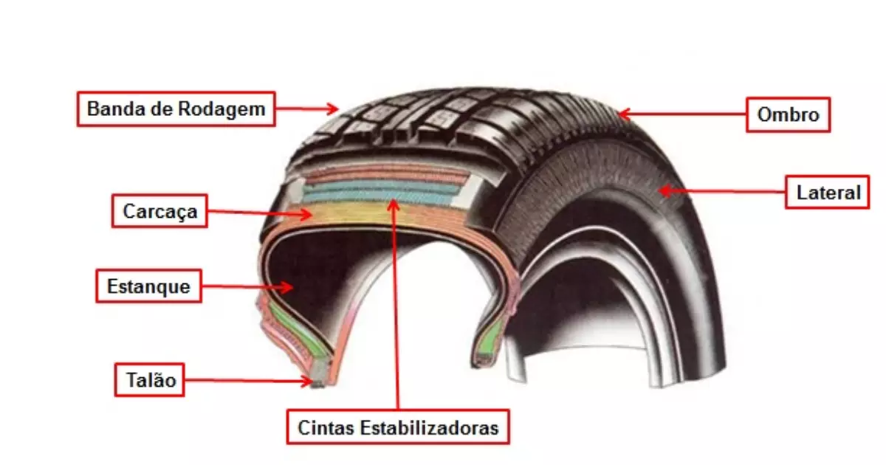
Constituição:
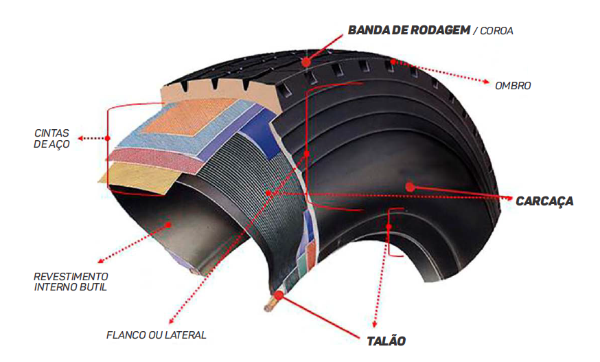
Dimensões de roda e pneu novo montado:
Padronização: Associação Latino-Americana de Pneus e Aro (Alapa)
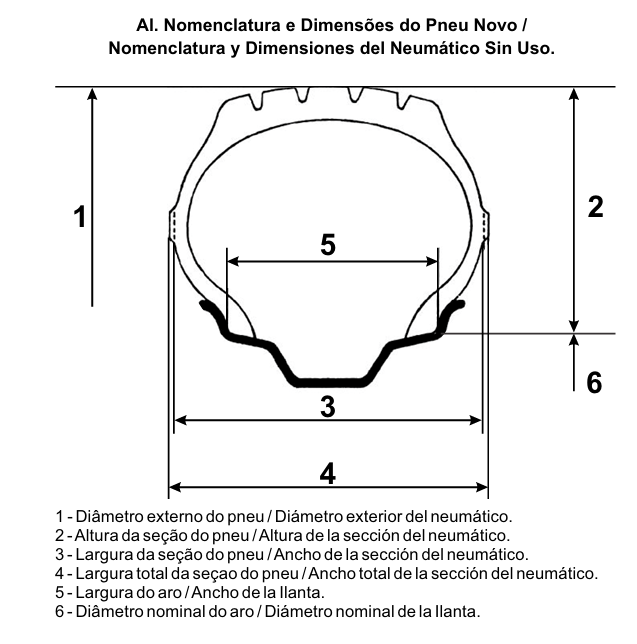
Alapa
Designação de tamanho:
O tamanho é formado pelas medidas nominais de largura da seção e do diâmetro interno do pneu, podendo incluir a relação nominal de aspecto entre as duas medidas.
Marcações do pneu:
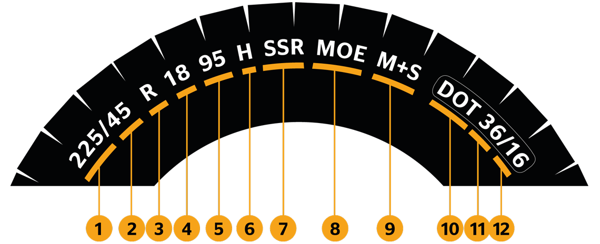
Marcações do pneu:
Marcações adicionais:
mais informações: Continental
Índice de carga (Alapa):
| IC | kg | IC | kg | IC | kg | IC | kg | IC | kg | IC | kg | IC | kg | IC | kg |
|---|---|---|---|---|---|---|---|---|---|---|---|---|---|---|---|
| 0 | 40 | 35 | 121 | 70 | 335 | 105 | 925 | 140 | 2.500 | 175 | 6.900 | 210 | 19.000 | 245 | 51.500 |
| 1 | 46,2 | 36 | 125 | 71 | 345 | 106 | 950 | 141 | 2.575 | 176 | 7.100 | 211 | 19.500 | 246 | 53.000 |
| 2 | 47 | 37 | 128 | 72 | 355 | 107 | 975 | 142 | 2.650 | 177 | 7.300 | 212 | 20.000 | 247 | 54.500 |
| – | – | – | – | – | – | – | – | – | – | – | – | – | – | – | – |
| 7 | 54,5 | 42 | 150 | 77 | 412 | 112 | 1.120 | 147 | 3.075 | 182 | 8.500 | 217 | 23.000 | 252 | 63.000 |
| 8 | 56 | 43 | 155 | 78 | 425 | 113 | 1.150 | 148 | 3.150 | 183 | 8.750 | 218 | 23.600 | 253 | 65.000 |
| 9 | 58 | 44 | 160 | 79 | 437 | 114 | 1.180 | 149 | 3.250 | 184 | 9.000 | 219 | 24.300 | 254 | 67.000 |
| 10 | 60 | 45 | 165 | 80 | 450 | 115 | 1.215 | 150 | 3.350 | 185 | 9.250 | 220 | 25.000 | 255 | 69.000 |
| 11 | 61,5 | 46 | 170 | 81 | 462 | 116 | 1.250 | 151 | 3.450 | 186 | 9.500 | 221 | 25.750 | 256 | 71.000 |
| 12 | 63 | 47 | 175 | 82 | 475 | 117 | 1.285 | 152 | 3.550 | 187 | 9.750 | 222 | 26.500 | 257 | 73.000 |
| 13 | 65 | 48 | 180 | 83 | 487 | 118 | 1.320 | 153 | 3.650 | 188 | 10.000 | 223 | 27.250 | 258 | 75.000 |
| – | – | – | – | – | – | – | – | – | – | – | – | – | – | – | – |
| 29 | 103 | 64 | 280 | 99 | 775 | 134 | 2.120 | 169 | 5.800 | 204 | 16.000 | 239 | 43.750 | 274 | 118.000 |
| 30 | 106 | 65 | 290 | 100 | 800 | 135 | 2.180 | 170 | 6.000 | 205 | 16.500 | 240 | 45.000 | 275 | 121.500 |
| 31 | 109 | 66 | 300 | 101 | 825 | 136 | 2.240 | 171 | 6.150 | 206 | 17.000 | 241 | 46.250 | 276 | 125.000 |
| 32 | 112 | 67 | 307 | 102 | 850 | 137 | 2.300 | 172 | 6.300 | 207 | 17.500 | 242 | 47.500 | 277 | 128.000 |
| 33 | 115 | 68 | 315 | 103 | 875 | 138 | 2.360 | 173 | 6.500 | 208 | 18.000 | 243 | 48.750 | 278 | 132.000 |
| 34 | 118 | 69 | 325 | 104 | 900 | 139 | 2.430 | 174 | 6.700 | 209 | 18.500 | 244 | 50.000 | 279 | 136.000 |
Velocidade (Alapa):
| Símbolo de velocidade | Velocidade (km/h) | Símbolo de velocidade | Velocidade (km/h) |
|---|---|---|---|
| A1 | 5 | A2 | 10 |
| A3 | 15 | A4 | 20 |
| A5 | 25 | A6 | 30 |
| A7 | 35 | A8 | 40 |
| B | 50 | C | 60 |
| D | 65 | E | 70 |
| F | 80 | G | 90 |
| J | 100 | K | 110 |
| L | 120 | M | 130 |
| N | 140 | P | 150 |
| Q | 160 | R | 170 |
| S | 180 | T | 190 |
| U | 200 | H | 210 |
| V | 240 | W | 270 |
| Y | 300 |
Tipos:
Diagonais:
São mais rígidos com formato da banda de rodagem arredondados.
São muito utilizados devido ao menor custo e à maior resistência de parte da carcaça e do costado.
Apropriado para tratores em solos irregulares, rochosos, condições florestais e em construções de estradas e pavimentos.
Diagonais:
São construídos com um conjunto de lonas que se estendem de talão a talão, formando ângulos alternados em diagonal à linha de centro da banda de rodagem.
Geralmente formam ângulos de 90° entre si.
Radiais:
Melhor aproveitamento da banda de rodagem. Melhor área de contato com o solo.
É um pneu de melhor desempenho.
Curiosidade: Foi lançado em 1946 pela Michelin. Em 1947 a Goodyear lançou os primeiros pneus de nylon e em 1974, a Pirelli lançou o pneu radial largo.
Radiais:
A principal característica é a construção com camadas têxteis que se estendem de talão a talão, com ângulos aproximados de 90° em relação à linha central da banda de rodagem.
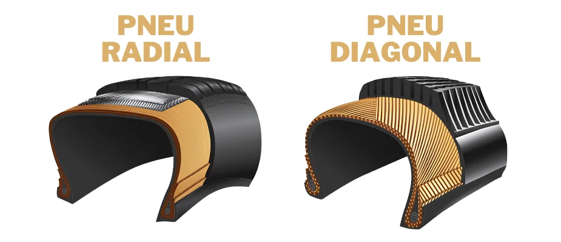
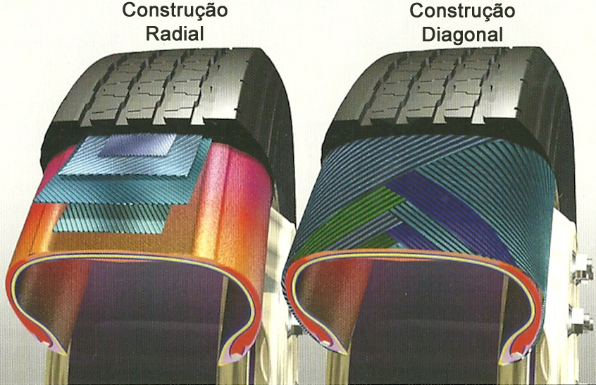
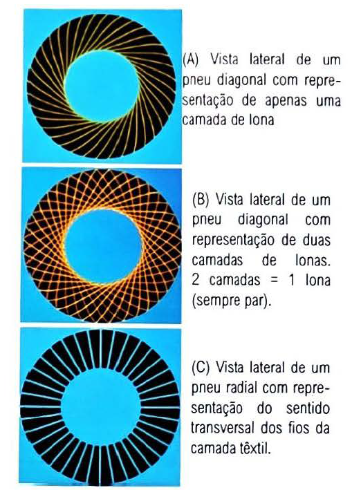
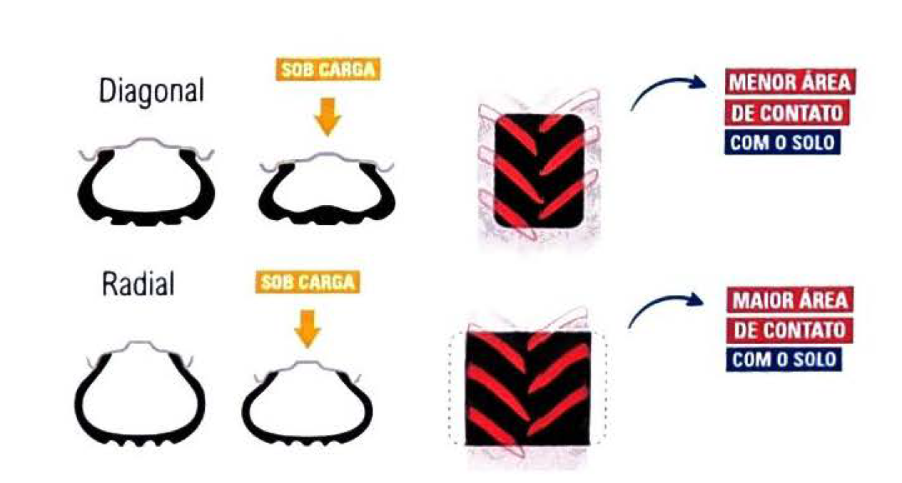
Falta de lastro (peso) leva a uma alta patinagem do trator, que perde velocidade e desgasta mais rapidamente os pneus além de consumir mais combustível.
Excesso de lastro causa compactação do solo e o trator terá maior resistência ao deslocamento. Nesse caso, o consumo de combustível é maior e os componentes do trator serão submetidos a uma força muito alta e pode danificar partes do veículo.
Na verdade… o lastreamento faz parte das “Condições de equilíbrio estático”.
Relações entre as forças mais importantes que atuam sobre o trator agrícola, em condições usuais de trabalho.
Na verdade… o lastreamento faz parte das “Condições de equilíbrio estático”.
Distribuição de carga nos eixos:
| Tipo de trator | Eixo dianteiro (%) | Eixo traseiro (%) |
|---|---|---|
| 4 × 2 | 40 | 60 |
| 4 × 2 TDA | 45 | 55 |
| 4 × 4 | 55 | 45 |
Determinada quando o trator está sem implemento ou máquina acoplada.
Distribuição de carga nos eixos:
Idealmente, o trator deveria possuir a capacidade de ajustar dinamicamente a distribuição de pesos nos eixos conforme as variações nas condições de operação (implemento)
É fundamental buscar distribuir a carga nos eixos de forma a otimizar o desempenho do trator em diferentes contextos operacionais.
A lastragem é variável e depende do implemento utilizado, condições de solo e da velocidade de uso.
Uma dica é utilizar a menor quantidade de peso possível, desde que a patinagem fique dentro dos limites aceitáveis para a operação. A patinagem é o indicativo de lastragem correta.
Patinagem:
| Condição | Patinagem (%) |
|---|---|
| Asfalto, concreto | 5 - 7 |
| Solo duro, compactado | 7 - 12 |
| Solo seco e macio | 10 - 15 |
| Solo arado, arenosos ou lamacentos | 13 - 18 |
Cálculo da patinagem:
Anote o tempo para percorrer 50 m, em estrada, em operação.
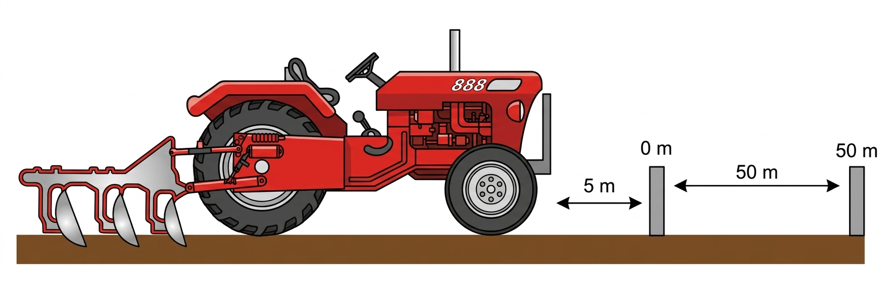
Cálculo da patinagem:
Anote o tempo para percorrer 50 m, em estrada, na mesma marcha e rotação.
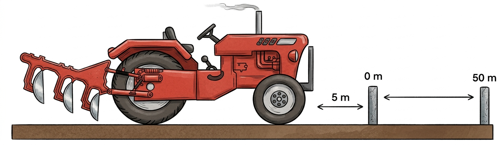
Cálculo da patinagem:
\[P(\%)=\frac{T_c-T_s}{T_s}*100\]
Formato do rastro:
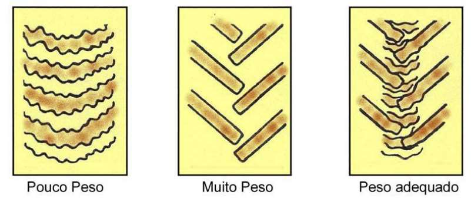
Formato do rastro:
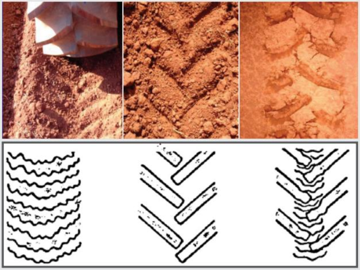
Tipos de lastro:
Tipos de lastro:
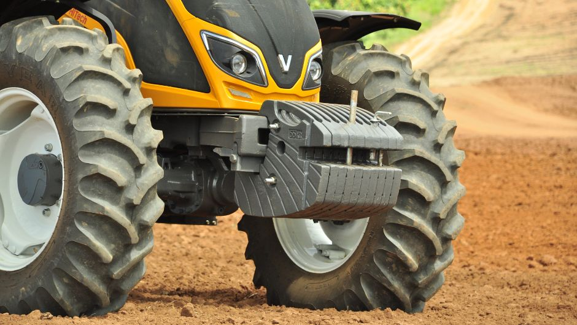
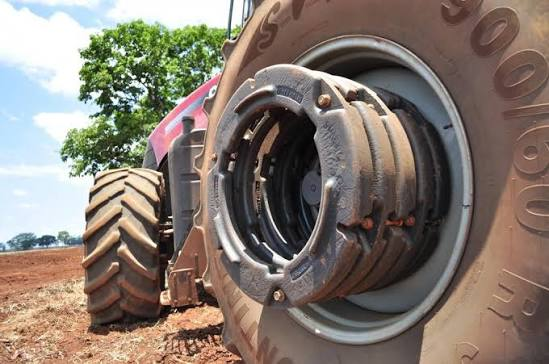
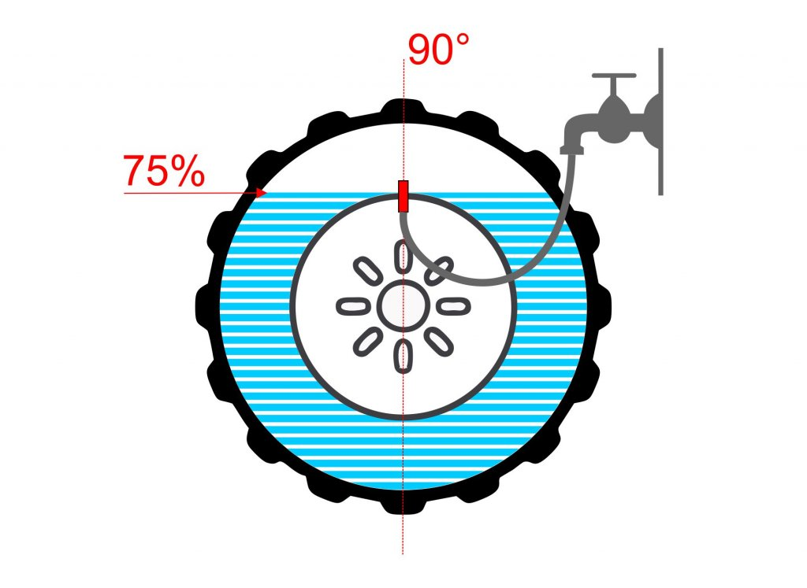
Lastro líquido máximo de pneus
| Dimensão | Água (kgf) | Solução de cloreto de cálcio (kgf) | Dimensão | Água (kgf) | Solução de cloreto de cálcio (kgf) |
|---|---|---|---|---|---|
| 10.0-16 | 68 | 108 | 360/70R-20 | 90 | 144 |
| 7.50-18 | 42 | 67 | 425/70R-20 | 130 | 208 |
| 9.5-24 | 65 | 104 | 440/65R-24 | 150 | 240 |
| 11.2-24 | 90 | 144 | 320/70R-24 | 85 | 136 |
| 12.4-24 | 115 | 184 | 360/70R-24 | 100 | 160 |
| 13.6-24 | 120 | 192 | 380/70R-24 | 130 | 208 |
| 14.9-24 | 150 | 240 | 420/70R-24 | 166 | 265 |
| 11.2-28 | 100 | 160 | 480/65R-28 | 175 | 280 |
| 13.6-28 | 119 | 190 | 540/65R-28 | 253 | 404 |
Lastro líquido máximo de pneus
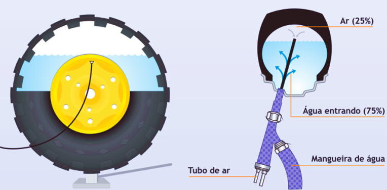
Vantagens do lastro líquido
Importante sobre o lastro líquido
Não é recomendado completar totalmente com água, isso reduz a flexibilidade dos pneus em amortecer os choques. Após a adição da água, os pneus devem ser calibrados com ar.
Lastro líquido máximo de pneus
Posição da válvula (12 horas e 4 horas)
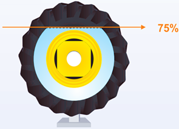
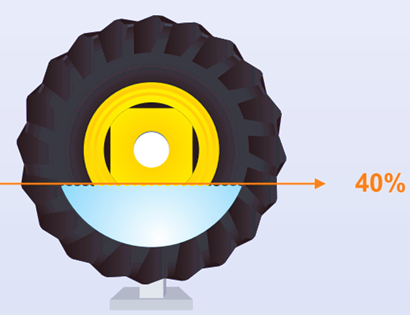
Calibragem de pneus
Calibragem de pneus
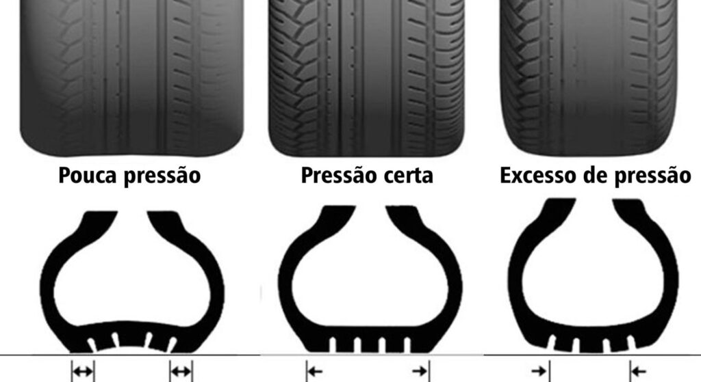
Cálculo de lastro:
Leva em consideração a operação, a velocidade e a potência do motor.
Ex: Qual o peso recomendado em lastro para um trator com 104 kW com pneu dianteiro 480/70R-28 e traseiro 580/70R-38. Será realizada uma operação de preparo do solo em velocidade de 5 e 6 km h-1 com parâmetro de 80 kgf kW-1.
Cálculo de lastro:
Ex: Qual o peso recomendado em lastro para um trator 4x2 TDA com 104 kW com pneu dianteiro 480/70R-28 e traseiro 580/70R-38.
\(W_l = P * (relação~peso~potência)\)
\(W_l = 104 * 80= 8320~kgf~(kg)\)
Cálculo de lastro:
Ex: Qual o peso recomendado em lastro para um trator 4x2 TDA com 104 kW com pneu dianteiro 480/70R-28 e traseiro 580/70R-38.
\(W_l = 104 * 80= 8320~kgf~(kg)\)
Eixo dianteiro:
\(W_{1l}= 0,45 (45\%) * 8320 = 3744~kgf\)
Eixo traseiro:
\(W_{2l}= 0,55 (55\%) * 8320 = 4576~kgf\)
Cálculo de lastro:
Ex: Qual o peso recomendado em lastro para um trator 4x2 TDA com 104 kW com pneu dianteiro 480/70R-28 e traseiro 580/70R-38.
Verificar a carga máxima dos eixos (manual de instruções). Para o exemplo temos carga máxima de 4500 kgf no eixo dianteiro e 7500 kgf no eixo traseiro.
\(W_1= 2200~kgf\), logo faltam 1544 kgf no eixo dianteiro.
\(W_2= 3050~kgf\) e, 1526 kgf no eixo traseiro.
Cálculo de lastro:
Ex: Qual o peso recomendado em lastro para um trator 4x2 TDA com 104 kW com pneu dianteiro 480/70R-28 e traseiro 580/70R-38.
\(W_{LPD} = 149~kgf (50\%~água)\)
\(W_{LPT} = 182~kgf (50\%~água)\)
Cálculo de lastro:
Ex: Qual o peso recomendado em lastro para um trator 4x2 TDA com 104 kW com pneu dianteiro 480/70R-28 e traseiro 580/70R-38.
\(W_{1l}= W_1=(2*W_{LPD})= 2200+ (2*149) = 2498~kgf\)
\(W_{2l}= W_2=(2*W_{LPT})= 3050+ (2*182) = 3414~kgf\)
Cálculo de lastro:
Ex: Qual o peso recomendado em lastro para um trator 4x2 TDA com 104 kW com pneu dianteiro 480/70R-28 e traseiro 580/70R-38.
Ainda faltam 1246 kgf no eixo dianteiro e 944 kgf no eixo traseiro.
\(W_{1l}= W_1=(2*W_{LPD})= 2200+ (2*149) = 2498~kgf\)
\(W_{2l}= W_2=(2*W_{LPT})= 3050+ (2*291) = 3632~kgf\)
No eixo dianteiro será suprido via adição de seções de 50 kgf, em um total de 24 seções.
Cálculo de lastro:
Ex: Qual o peso recomendado em lastro para um trator 4x2 TDA com 104 kW com pneu dianteiro 480/70R-28 e traseiro 580/70R-38.
Ainda faltam 1246 kgf no eixo dianteiro e 944 kgf no eixo traseiro.
No eixo traseiro são disponibilizados discos de 65 kgf que podem ser adicionados em um máximo de 3 peças cada lado.
Assim, mais 390 kgf serão supridos via lastro sólido, o que resulta em uma falta de 554 kgf. Esses podem ser supridos adicionando solução de cloreto de cálcio ao invés de água.
Cálculo de lastro:
Ex: Qual o peso recomendado em lastro para um trator 4x2 TDA com 104 kW com pneu dianteiro 480/70R-28 e traseiro 580/70R-38.
Com cloreto o lastro líquido pode fornecer até 699 kgf por pneu, o que representa 4448 kgf, sobrando apenas 128 kgf que agora podem ser supridos com 2 discos sólidos de 65 kgf.
Cálculo de lastro:
A regra mais importante é: verifique o manual do operador de cada trator, pois, cada fabricante já possui especificações para lastro.
Cálculo de lastro exemplo NH:
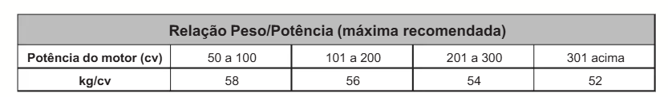
Cálculo de lastro exemplo NH:
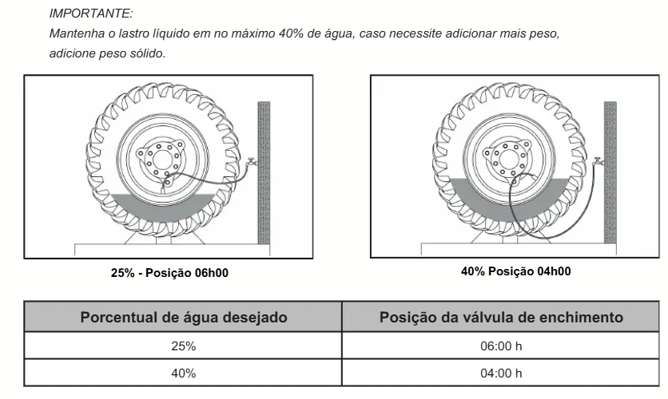
Cálculo de lastro exemplo NH:
Um cliente comprou um T7.240 e deseja trabalhar com grade na barra de tração. Potência nominal do motor: 212 cv. Pneu Dianteiro: 600/65R28 A8 R1W e traseiro: 710/70R38 A8 R1W
Distribuição de peso sem lastro
Lastro sólido
Qual é a configuração ideal de lastro para trabalho severo na barra de tração?
Cálculo de lastro exemplo NH:
Segundo a Tabela em 1.4.:
Lastro ideal:
\(212\ \text{cv} \times 54\ \text{kg cv}^{-1}
= 11.448\ \text{kg}\)
Segundo a distribuição de peso para esta operação:
Eixo dianteiro: 11.448 kg × 40% = 4.580 kg
Eixo traseiro: 11.448 kg × 60% = 6.868 kg
Esses valores são os pesos que o trator deve obter nos eixos dianteiro e traseiro.
Cálculo de lastro exemplo NH:
Trator com lastro sólido
Soma-se o peso dos eixos sem lastro aos lastros sólidos embarcados de fábrica:
Para chegar ao lastro ideal dos eixos, adiciona-se lastro líquido respeitando os valores de 40%. O resultado abaixo representa a quantidade de água necessária:
Cálculo de lastro exemplo NH:
Eixo dianteiro: adicione 40% de lastro líquido nos pneus
\(200 \times 2 = \mathbf{400\ kg}\)
Eixo traseiro: adicione 40% de lastro líquido nos pneus
\(407 \times 2 = \mathbf{814\ kg}\)
Como o lastro líquido não foi suficiente para chegar ao lastro ideal, deve-se adicionar lastro sólido.
Jamais ultrapassar 40% de água nos pneus.
Eixo dianteiro: adicionar 178 kg de lastro sólido
\(4 \times 45 = 180\ kg\)
Eixo traseiro: adicionar 454 kg de lastro sólido
\(2 \times 227 = 454\ kg\)
Cálculo de lastro exemplo NH:
Distribuição final de peso
Assim, o trator apresenta a seguinte distribuição de peso:
Eixo dianteiro:
4.002 kg (eixo + lastro de fábrica) + 400 kg (água) + 178 kg (lastro sólido adicional)
= 4.580 kg (39,8%)
Eixo traseiro:
5.660 kg (eixo + lastro de fábrica) + 814 kg (água) + 454 kg (lastro sólido adicional)
= 6.928 kg (60,2%)
Peso total com lastro: 11.508 kg
Cálculo de lastro exemplo 2:
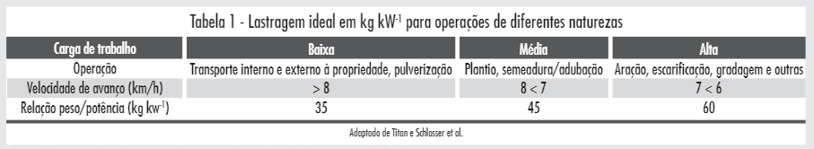
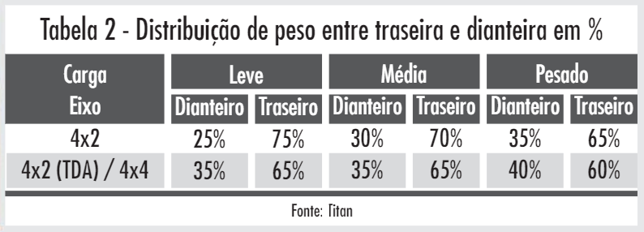
| Tipo de lastro | Leve | Média | Pesada |
|---|---|---|---|
| kg/cv | 50 | 55 | 60 |
É a distância de centro a centro dos pneus traseiros ou dianteiros e é ajustável na maioria dos sistemas de rodados
Funções:
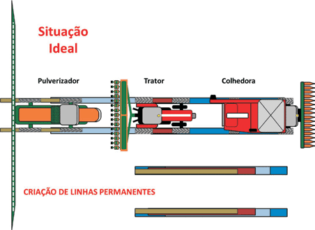
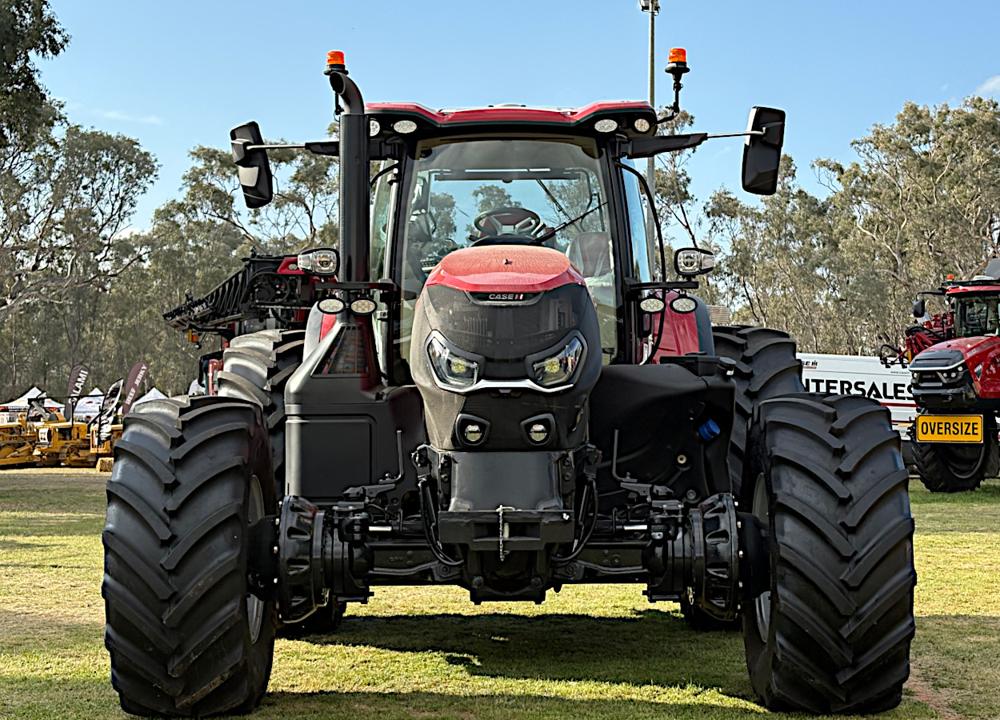
Como alterar:
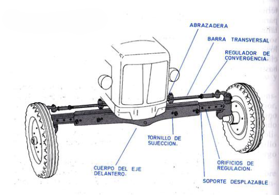
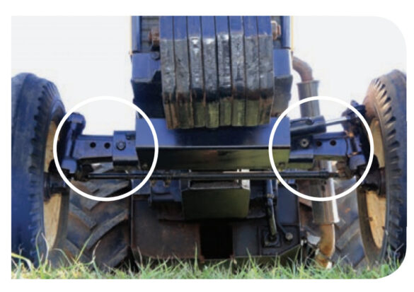
Como alterar:
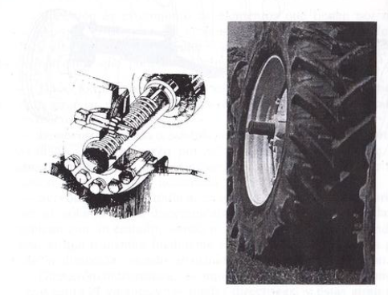
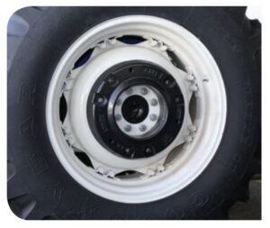
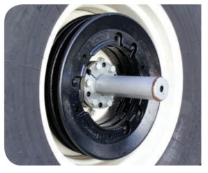